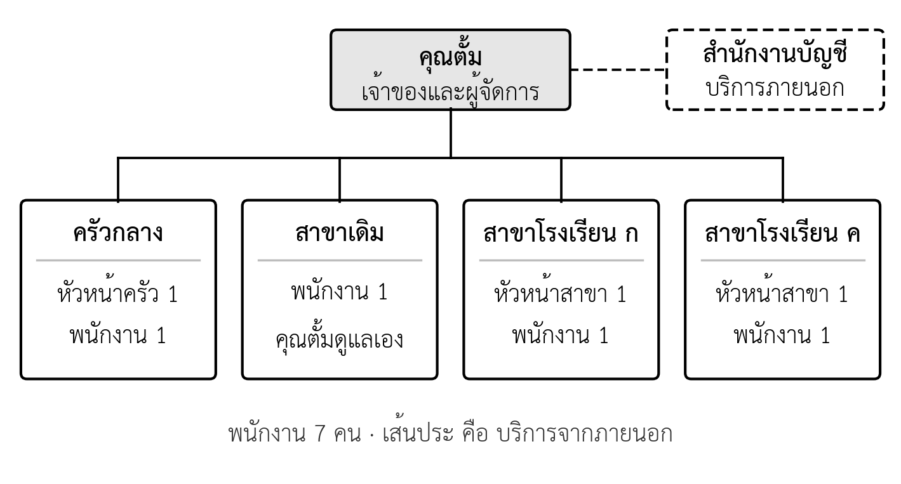
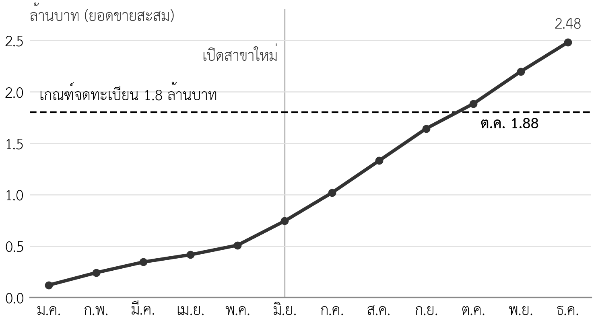

- วิเคราะห์ทักษะที่ธุรกิจต้องการเทียบกับทีม และเสนอวิธีปิดช่องว่างได้
- เขียนผังองค์กร หน้าที่ของแต่ละตำแหน่ง และผู้ทำแทนในงานสำคัญได้
- เปรียบเทียบรูปแบบการประกอบธุรกิจ และเลือกรูปแบบที่เหมาะกับแต่ละระยะได้
- จัดทำรายการการจดทะเบียนและใบอนุญาตที่ธุรกิจต้องมีได้
- อธิบายภาษีหลักของธุรกิจขนาดเล็ก และประเมินผลของภาษีมูลค่าเพิ่มต่อราคาและรายได้ได้
- ระบุทรัพย์สินทางปัญญาของธุรกิจ และเลือกวิธีคุ้มครองที่เหมาะสมได้
ความนำ
บทที่ 8 ตอบว่าธุรกิจผลิตและส่งมอบอย่างไร ใช้คนกี่คน และแต่ละคนทำงานใด บทนี้ตอบคำถามที่ต่อจากนั้น คือ ใครเป็นผู้ตัดสินใจและรับผิดชอบผลของงาน ธุรกิจมีสถานะทางกฎหมายแบบใด ต้องจดทะเบียนและขออนุญาตอะไร ต้องเสียภาษีอะไร และจะปกป้องชื่อร้านและสูตรอาหารที่เป็นความได้เปรียบได้อย่างไร คำตอบเหล่านี้เป็นแผนธุรกิจส่วนที่ 8 (ตารางที่ 1.6)
ผู้อ่านแผนมักอ่านส่วนนี้เพื่อตอบคำถามที่ไม่ได้เขียนไว้ตรง ๆ ธนาคารต้องการรู้ว่าถ้าเจ้าของป่วย ธุรกิจยังเดินได้หรือไม่ และธุรกิจทำถูกกฎหมายครบหรือไม่ เพราะธุรกิจที่ถูกสั่งปิดหรือถูกเรียกภาษีย้อนหลังย่อมผ่อนหนี้ไม่ได้ ผู้ลงทุนต้องการรู้ว่าทีมมีความสามารถพอสำหรับระยะต่อไปหรือไม่ และสิ่งที่ตนลงทุนเป็นของธุรกิจจริงหรือเป็นของบุคคล บทนี้จึงไม่ได้สอนกฎหมายเพื่อให้นิสิตเป็นนักกฎหมาย แต่สอนให้วางแผนว่าต้องทำอะไร เมื่อใด และต้องถามผู้รู้เรื่องใด
9.1 แผนองค์กรและกฎหมายตอบคำถามอะไร
แผนองค์กร (organization plan) คือส่วนของแผนธุรกิจที่อธิบายว่าใครทำงานใด ใครรับผิดชอบการตัดสินใจใด และธุรกิจมีสถานะทางกฎหมายอย่างไร แผนส่วนนี้ควรตอบหกคำถามตามตารางที่ 9.1 ตัวเลขที่ได้จากส่วนนี้ เช่น ค่าบริการทางบัญชี เงินสมทบประกันสังคม ค่าธรรมเนียมการจดทะเบียน และภาษี จะเข้าไปอยู่ในแผนการเงินบทที่ 10
ตารางที่ 9.1 คำถามหลักของแผนองค์กรและกฎหมาย
| คำถาม | หัวข้อ | ผลลัพธ์ที่ต้องได้ | ส่งต่อไปที่ |
|---|---|---|---|
| ทีมมีทักษะพอหรือไม่ | 9.2 | ตารางทักษะ ช่องว่าง และวิธีปิดช่องว่าง | แผนการเงิน (ค่าจ้างและค่าบริการภายนอก) |
| ใครรับผิดชอบอะไร | 9.3 | ผังองค์กร หน้าที่ และผู้ทำแทน | แผนความเสี่ยง (บทที่ 11) |
| ธุรกิจเป็นรูปแบบใด | 9.4 | รูปแบบที่เลือกในแต่ละระยะพร้อมเหตุผล | แผนการเงิน (ภาษี) แผนระดมทุน (บทที่ 12) |
| ต้องจดทะเบียนและขออนุญาตอะไร | 9.5 | รายการพร้อมหน่วยงานและกำหนดเวลา | ตารางเวลาของแผน |
| ต้องเสียภาษีอะไร | 9.6 | ภาษีที่เกี่ยวข้องและผลต่อรายได้ | แผนการเงิน |
| ปกป้องอะไรและอย่างไร | 9.7 | ทรัพย์สินทางปัญญาและวิธีคุ้มครอง | กลยุทธ์ (บทที่ 6) แผนแฟรนไชส์ |
9.2 ทีมผู้ก่อตั้งและทักษะที่ธุรกิจต้องการ
9.2.1 ตารางทักษะ
แผนธุรกิจของนิสิตมักแนะนำทีมด้วยประวัติการศึกษาและตำแหน่งในกลุ่ม เช่น ประธาน เลขานุการ และเหรัญญิก ซึ่งไม่ได้บอกผู้อ่านว่าทีมทำธุรกิจนี้ได้หรือไม่ วิธีที่ดีกว่าคือเริ่มจากงานที่ธุรกิจต้องทำ แล้วถามว่าใครในทีมมีทักษะนั้น ทักษะใดที่ไม่มีใครมีคือช่องว่างของทักษะ (skill gap) ซึ่งแผนต้องบอกว่าจะปิดอย่างไร มีสี่ทางเลือก คือ เรียนรู้เอง จ้างพนักงาน จ้างบริการภายนอก หรือหาที่ปรึกษา
ตารางที่ 9.2 วิเคราะห์ทักษะของหมูปิ้งอาจารย์ตั้ม (กรณีศึกษาสมมติ) สำหรับระยะที่ 1 และระยะต่อไป ข้อสังเกตสำคัญคือทักษะที่ทำให้ร้านเดิมสำเร็จ คือสูตรและการขาย ไม่ใช่ทักษะเดียวกับที่สามสาขาและแฟรนไชส์ต้องการ
ตารางที่ 9.2 ทักษะที่ธุรกิจต้องการกับผู้รับผิดชอบ (กรณีศึกษาสมมติ)
| ทักษะ | ต้องใช้ในระยะ | ผู้มีทักษะ | วิธีปิดช่องว่าง |
|---|---|---|---|
| สูตรและรสชาติ | ทุกระยะ | คุณตั้ม | เขียนสูตรมาตรฐาน ถ่ายทอดให้หัวหน้าครัวกลาง |
| ขายและดูแลลูกค้า | ทุกระยะ | คุณตั้ม | ฝึกหัวหน้าสาขา |
| บริหารคนและฝึกอบรม | 1 เป็นต้นไป | คุณตั้มมีประสบการณ์สอนจากอาชีพครู | เรียนรู้เพิ่ม |
| บัญชีและภาษี | 1 เป็นต้นไป | ไม่มี | จ้างสำนักงานบัญชีเดือนละ 2,000 บาท |
| สัญญาและกฎหมายแฟรนไชส์ | 2 | ไม่มี | จ้างที่ปรึกษาก่อนขายแฟรนไชส์ |
| มาตรฐานการผลิตอาหาร | 3 | ไม่มี | จ้างผู้ควบคุมคุณภาพที่มีประสบการณ์โรงงานอาหาร |
9.2.2 ทีมที่ผู้อ่านแผนเชื่อถือ
ผู้อ่านแผนไม่ได้คาดหวังว่าทีมจะมีทุกทักษะตั้งแต่วันแรก แต่คาดหวังว่าทีมรู้ว่าตนขาดอะไร และมีแผนปิดช่องว่างก่อนที่จะกลายเป็นปัญหา ทีมที่เขียนว่า "ทุกคนช่วยกันทำทุกอย่าง" ให้ภาพที่ตรงกันข้าม คือไม่มีใครรับผิดชอบสิ่งใดจริง ในงานกลุ่มของรายวิชานี้ นิสิตควรเขียนทีมของธุรกิจสมมติตามบทบาทที่ธุรกิจต้องการ เช่น ผู้รับผิดชอบการผลิต การตลาด และการเงิน และระบุอย่างตรงไปตรงมาว่าทักษะใดที่กลุ่มยังไม่มี
ในกรณีศึกษา คุณตั้มมีจุดแข็งที่ไม่เด่นในตารางแต่สำคัญต่อระยะต่อไป คือประสบการณ์จากอาชีพครู การขยายเป็นสามสาขาเปลี่ยนงานของคุณตั้มจากการทำหมูปิ้งเองเป็นการสอนคนอื่นให้ทำได้เท่ากัน และการขายแฟรนไชส์ในระยะที่ 2 คือการสอนคนจำนวนมากขึ้นอีก ทักษะการสอนจึงเป็นทรัพยากรที่ควรเขียนไว้ในแผน
9.3 โครงสร้างองค์กรและหน้าที่
9.3.1 ผังองค์กร
โครงสร้างองค์กร (organizational structure) คือการจัดว่าใครรายงานต่อใคร และใครมีอำนาจตัดสินใจเรื่องใด ธุรกิจขนาดเล็กไม่จำเป็นต้องมีหลายชั้น แต่ต้องชัดเจนว่าเมื่อเจ้าของไม่อยู่ ใครเป็นผู้ตัดสินใจในแต่ละจุดงาน ภาพที่ 9.1 แสดงผังองค์กรของกรณีศึกษาในระยะที่ 1 ซึ่งมีพนักงานเจ็ดคนในสี่จุดงาน และใช้บริการบัญชีจากภายนอก

9.3.2 หน้าที่และอำนาจตัดสินใจ
ผังองค์กรบอกเพียงว่าใครอยู่ตรงไหน ตารางหน้าที่บอกว่าแต่ละตำแหน่งต้องทำอะไรและตัดสินใจอะไรได้เอง การเขียนอำนาจตัดสินใจไว้ชัดเจนช่วยให้งานเดินได้ในเช้ามืดที่คุณตั้มติดต่อไม่ได้ เช่น หัวหน้าสาขาตัดสินใจทิ้งหมูที่วางเกินสองชั่วโมงได้เองโดยไม่ต้องรอถาม (ตารางที่ 9.3)
ตารางที่ 9.3 หน้าที่และอำนาจตัดสินใจของแต่ละตำแหน่ง (กรณีศึกษาสมมติ)
| ตำแหน่ง | หน้าที่หลัก | ตัดสินใจได้เอง | ต้องปรึกษาคุณตั้ม |
|---|---|---|---|
| คุณตั้ม (เจ้าของและผู้จัดการ) | วางแผน ขนส่ง ตรวจคุณภาพ ผสมเครื่องหมัก ดูแลสาขาเดิม | ทุกเรื่อง | – |
| หัวหน้าครัวกลาง | ควบคุมการผลิตตามสูตร บันทึกอุณหภูมิ สั่งหมูรายวัน | ปฏิเสธหมูที่ไม่ผ่านเกณฑ์ ปรับยอดผลิตตามออเดอร์ | เปลี่ยนผู้จัดหา ซื้ออุปกรณ์ |
| พนักงานครัวกลาง | หั่น หมัก เสียบไม้ ทำความสะอาด | – | – |
| หัวหน้าสาขา | ย่าง ขาย ส่งออเดอร์ LINE บันทึกยอดขายและของเสีย | ทิ้งหมูที่ไม่ผ่านเกณฑ์ แก้ปัญหาลูกค้าไม่เกิน 100 บาท | ส่วนลดนอกนโยบาย เปลี่ยนเวลาขาย |
| พนักงานสาขา | ย่างหรือขายตามที่หัวหน้าสาขามอบหมาย | – | – |
| สำนักงานบัญชี (ภายนอก) | บันทึกบัญชี ยื่นภาษีรายเดือนและรายปี | – | ทุกเรื่องที่กระทบภาษี |
9.3.3 ผู้ทำแทนในงานสำคัญ
ธุรกิจขนาดเล็กส่วนใหญ่มีความเสี่ยงจากบุคคลสำคัญ (key person risk) คือธุรกิจหยุดเมื่อคนคนเดียวไม่อยู่ ในกรณีศึกษา คุณตั้มเป็นผู้ขนส่งหมูทุกเช้า ถ้าคุณตั้มป่วยในวันหนึ่ง สามสาขาจะไม่มีหมูขาย วิธีลดความเสี่ยงนี้คือระบุงานที่หยุดไม่ได้ และกำหนดผู้ทำแทนพร้อมฝึกไว้ล่วงหน้า (ตารางที่ 9.4)
ตารางที่ 9.4 งานที่หยุดไม่ได้และผู้ทำแทน (กรณีศึกษาสมมติ)
| งาน | ผู้รับผิดชอบหลัก | ผู้ทำแทน | สิ่งที่ต้องเตรียม |
|---|---|---|---|
| ขนส่งตอนเช้า | คุณตั้ม | หัวหน้าครัวกลาง | ใบขับขี่ ฝึกเส้นทางเดือนละครั้ง |
| ผสมเครื่องหมัก | คุณตั้ม | หัวหน้าครัวกลาง | ทำซองเครื่องหมักสำรองไว้ใช้ 7 วัน |
| ตรวจรสชาติก่อนส่ง | คุณตั้ม | หัวหน้าครัวกลาง | ฝึกชิมเทียบกับตัวอย่างมาตรฐาน |
| ดูแลสาขาเดิม | คุณตั้ม | พนักงานสาขาเดิม | ฝึกงานหัวหน้าสาขา |
| ย่างที่สาขาใหม่ | หัวหน้าสาขา | พนักงานสาขาเดิม หรือพนักงานครัวกลาง | ฝึกย่างตามขั้นตอนมาตรฐาน |
ตารางนี้แสดงอีกเรื่องหนึ่งที่สำคัญ หัวหน้าครัวกลางเป็นผู้ทำแทนในสามงาน คนคนนี้จึงเป็นบุคคลสำคัญคนที่สองของธุรกิจ แผนควรเขียนว่าร้านจะรักษาพนักงานคนนี้ไว้อย่างไร และเมื่อเข้าระยะที่ 2 ควรพิจารณาค่าตอบแทนที่สะท้อนความรับผิดชอบที่เพิ่มขึ้น
9.4 รูปแบบการประกอบธุรกิจ
9.4.1 เปรียบเทียบสี่รูปแบบ
ธุรกิจในประเทศไทยประกอบการได้หลายรูปแบบ รูปแบบที่ผู้ประกอบการรายใหม่ใช้บ่อยมีสี่รูปแบบ คือ บุคคลธรรมดา ห้างหุ้นส่วนสามัญ ห้างหุ้นส่วนจำกัด และบริษัทจำกัด ความแตกต่างที่สำคัญที่สุดคือความรับผิด (liability) ต่อหนี้ของธุรกิจ ถ้าความรับผิดไม่จำกัด เจ้าหนี้ของธุรกิจเรียกชำระหนี้จากทรัพย์สินส่วนตัวของเจ้าของได้ ส่วนความแตกต่างด้านภาษีคือ บุคคลธรรมดาเสียภาษีเงินได้บุคคลธรรมดาในอัตราก้าวหน้า ส่วนห้างหุ้นส่วนจำกัดและบริษัทจำกัดเป็นนิติบุคคล เสียภาษีเงินได้นิติบุคคลจากกำไรสุทธิ (ตารางที่ 9.5)
ตารางที่ 9.5 เปรียบเทียบรูปแบบการประกอบธุรกิจ
| ประเด็น | บุคคลธรรมดา | ห้างหุ้นส่วนสามัญ | ห้างหุ้นส่วนจำกัด | บริษัทจำกัด |
|---|---|---|---|---|
| จำนวนผู้ก่อตั้ง | 1 คน | 2 คนขึ้นไป | 2 คนขึ้นไป | ผู้เริ่มก่อการ 2 คนขึ้นไป |
| ความรับผิดต่อหนี้ | ไม่จำกัด | ไม่จำกัดร่วมกัน | หุ้นส่วนผู้จัดการไม่จำกัด หุ้นส่วนอื่นจำกัด | จำกัดเท่ามูลค่าหุ้นที่ยังชำระไม่ครบ |
| สถานะ | ไม่เป็นนิติบุคคล | เป็นนิติบุคคลเมื่อจดทะเบียน | นิติบุคคล | นิติบุคคล |
| ภาษีเงินได้ | บุคคลธรรมดา อัตราก้าวหน้า | ขึ้นกับการจดทะเบียน | นิติบุคคล | นิติบุคคล |
| ความยุ่งยากด้านบัญชี | ต่ำ | ต่ำถึงปานกลาง | สูง ต้องมีงบการเงินที่ผู้สอบบัญชีตรวจ | สูง ต้องมีงบการเงินที่ผู้สอบบัญชีตรวจ |
| ความน่าเชื่อถือต่อผู้ลงทุนและคู่สัญญา | ต่ำ | ต่ำ | ปานกลาง | สูง รับผู้ลงทุนด้วยการออกหุ้นได้ |
การจัดตั้งบริษัทจำกัดทำได้ง่ายขึ้นตั้งแต่ปี 2566 เมื่อพระราชบัญญัติแก้ไขเพิ่มเติมประมวลกฎหมายแพ่งและพาณิชย์ (ฉบับที่ 23) พ.ศ. 2565 มีผลใช้บังคับ และลดจำนวนผู้เริ่มก่อการขั้นต่ำจากสามคนเป็นสองคน ข้อนี้ทำให้ผู้ประกอบการรายเล็กที่มีหุ้นส่วนเพียงคนเดียวเลือกรูปแบบบริษัทได้ แต่ความง่ายในการจัดตั้งไม่ได้แปลว่าควรตั้งบริษัททันที เพราะบริษัทมีภาระด้านบัญชีและการสอบบัญชีทุกปี
9.4.2 เลือกรูปแบบตามระยะ
รูปแบบธุรกิจที่ดีที่สุดเปลี่ยนไปตามระยะของธุรกิจ และไม่ควรเลือกครั้งเดียวตลอดไป คำถามที่ใช้ตัดสินมีสามข้อ คือ ความเสี่ยงที่จะเกิดหนี้สูงเกินทรัพย์สินส่วนตัวมีมากเพียงใด ต้องรับผู้ลงทุนหรือทำสัญญากับคู่ค้าจำนวนมากหรือไม่ และภาระด้านบัญชีคุ้มกับประโยชน์หรือไม่ ตารางที่ 9.6 แสดงการตัดสินใจของกรณีศึกษา
ตารางที่ 9.6 รูปแบบธุรกิจที่เลือกในแต่ละระยะ (กรณีศึกษาสมมติ)
| ระยะ | รูปแบบ | เหตุผล |
|---|---|---|
| 1 (2570–2571) | บุคคลธรรมดา เหมือนเดิม | หนี้ 300,000 บาทอยู่ในระดับที่คุณตั้มรับได้ ยังไม่มีผู้ลงทุน ลดภาระบัญชีในช่วงที่ต้องโฟกัสการขยายสาขา |
| 2 (2572–2574) | บริษัทจำกัด ตั้งในไตรมาสแรกปี 2572 หลังผ่านด่าน 1 ผู้เริ่มก่อการคือคุณตั้มและคู่สมรส | ต้องทำสัญญาแฟรนไชส์หลายฉบับ แยกความรับผิดของธุรกิจออกจากทรัพย์สินส่วนตัว และเตรียมรับผู้ลงทุน |
| 3 (2575–2579) | บริษัทจำกัดเดิม เพิ่มทุนรับผู้ลงทุน | ต้องใช้เงินลงทุนสร้างโรงงาน |
การตั้งบริษัทหลังผ่านด่าน 1 ไม่ใช่ก่อน มีเหตุผลเดียวกับหลักของรายวิชา ถ้าไม่ผ่านด่าน 1 และตัดสินใจหยุดที่สามสาขา ร้านไม่จำเป็นต้องมีบริษัท ค่าใช้จ่ายและภาระทางบัญชีของบริษัทจึงควรเกิดขึ้นเมื่อมีหลักฐานแล้วว่าจะเดินต่อ
9.5 การจดทะเบียนและใบอนุญาต
9.5.1 รายการตรวจสอบ
ธุรกิจทุกประเภทต้องมีการจดทะเบียนและใบอนุญาตบางรายการ แต่รายการแตกต่างกันตามประเภทธุรกิจ ทำเล และขนาด แผนธุรกิจที่ดีไม่ได้คัดลอกรายการกฎหมายทั้งหมด แต่ทำรายการเฉพาะที่ธุรกิจของตนต้องมี พร้อมหน่วยงานที่รับเรื่องและกำหนดเวลาที่ต้องเสร็จ ผู้ประกอบการต้องทำทั้งการจดทะเบียนพาณิชย์ตามพระราชบัญญัติทะเบียนพาณิชย์ พ.ศ. 2499 และสำหรับธุรกิจอาหาร ต้องปฏิบัติตามพระราชบัญญัติการสาธารณสุข พ.ศ. 2535 ซึ่งกำหนดว่าสถานที่จำหน่ายอาหารที่มีพื้นที่ไม่เกิน 200 ตารางเมตรต้องแจ้งต่อเจ้าพนักงานท้องถิ่นและได้รับหนังสือรับรองการแจ้ง ส่วนที่มีพื้นที่เกิน 200 ตารางเมตรต้องได้รับใบอนุญาต (พระราชบัญญัติการสาธารณสุข พ.ศ. 2535, 2535)
ตารางที่ 9.7 เป็นรายการตรวจสอบของกรณีศึกษาในระยะที่ 1 ข้อสังเกตคือบางรายการเขียนว่า "ต้องตรวจกับหน่วยงาน" ซึ่งเป็นคำตอบที่ถูกต้องในแผนธุรกิจ ถ้าผู้เขียนแผนยังไม่แน่ใจว่ากิจกรรมของตนเข้าข่ายต้องขออนุญาตหรือไม่ การเขียนว่าจะสอบถามหน่วยงานใดและเมื่อใดดีกว่าการเดา หรือการไม่เขียนเลย
ตารางที่ 9.7 รายการจดทะเบียนและใบอนุญาตของระยะที่ 1 (กรณีศึกษาสมมติ)
| รายการ | หน่วยงาน | กำหนดเวลา | สถานะ |
|---|---|---|---|
| ทะเบียนพาณิชย์ แจ้งเพิ่มสาขาและครัวกลาง | เทศบาลเมืองมหาสารคาม | ก่อนเปิดสาขาใหม่ | มีทะเบียนแล้ว ต้องแจ้งเปลี่ยนแปลง |
| หนังสือรับรองการแจ้งจัดตั้งสถานที่จำหน่ายอาหาร สาขาละหนึ่งฉบับ | เทศบาลเมืองมหาสารคาม | ก่อนเปิดสาขาใหม่ | ต้องยื่น |
| ครัวกลาง: ต้องขออนุญาตตามข้อบัญญัติท้องถิ่นหรือไม่ | เทศบาลเมืองมหาสารคาม | ก่อนเช่าพื้นที่ | ต้องตรวจกับหน่วยงาน |
| อบรมผู้ประกอบกิจการและผู้สัมผัสอาหาร | หน่วยจัดอบรมที่กรมอนามัยรับรอง | ก่อนเริ่มงาน | พนักงานใหม่ 6 คน |
| จดทะเบียนภาษีมูลค่าเพิ่ม | สำนักงานสรรพากรพื้นที่ | ก่อนเปิดสาขาใหม่ (หัวข้อ 9.6) | ต้องยื่น |
| ขึ้นทะเบียนนายจ้างและลูกจ้างประกันสังคม | สำนักงานประกันสังคมจังหวัด | เมื่อจ้างพนักงาน | สาขาเดิมมีแล้ว ต้องเพิ่มลูกจ้างใหม่ |
| ยื่นจดเครื่องหมายการค้า | กรมทรัพย์สินทางปัญญา | ภายในปี 2570 (หัวข้อ 9.7) | ต้องยื่น |
| แจ้งวัตถุประสงค์การเก็บข้อมูลลูกค้าใน LINE | ภายในร้าน | ก่อนรับออเดอร์ | ต้องจัดทำ |
9.5.2 ลูกจ้างและประกันสังคม
การจ้างพนักงานทำให้ธุรกิจมีหน้าที่ตามกฎหมายแรงงานและกฎหมายประกันสังคม เช่น จ่ายค่าจ้างไม่ต่ำกว่าอัตราค่าจ้างขั้นต่ำของจังหวัด ขึ้นทะเบียนนายจ้างและลูกจ้าง และนำส่งเงินสมทบเข้ากองทุนประกันสังคมทั้งส่วนของนายจ้างและส่วนที่หักจากค่าจ้างของลูกจ้าง (พระราชบัญญัติประกันสังคม พ.ศ. 2533, 2533) หน้าที่นี้รวมถึงพนักงานที่ทำงานไม่เต็มเวลาด้วย แผนธุรกิจจึงต้องรวมเงินสมทบส่วนของนายจ้างเป็นต้นทุนของการจ้างงาน ไม่ใช่ใช้เฉพาะค่าจ้าง ในกรณีศึกษา บทที่ 10 ใช้ข้อสมมติว่าเงินสมทบส่วนของนายจ้างเท่ากับร้อยละ 5 ของค่าจ้าง ผู้ประกอบการต้องตรวจอัตราและฐานค่าจ้างที่ใช้คำนวณกับสำนักงานประกันสังคมทุกครั้งที่ทำแผน เพราะอัตราอาจเปลี่ยนตามประกาศ
9.6 ภาษีเบื้องต้น
9.6.1 ภาษีหลักของธุรกิจขนาดเล็ก
ธุรกิจขนาดเล็กเกี่ยวข้องกับภาษีหลักสามประเภท ประเภทแรก ภาษีเงินได้ ซึ่งเสียจากกำไรของธุรกิจ ประเภทที่สอง ภาษีมูลค่าเพิ่ม (value added tax) ซึ่งเก็บจากผู้ซื้อทุกครั้งที่ขาย แล้วธุรกิจนำส่งรัฐ ประเภทที่สาม ภาษีที่ธุรกิจหักจากเงินที่จ่ายให้ผู้อื่นแล้วนำส่งแทน เช่น ภาษีที่หักจากค่าจ้างบางกรณี ตารางที่ 9.8 สรุปหลักของภาษีสองประเภทแรก ซึ่งกระทบแผนการเงินมากที่สุด
ตารางที่ 9.8 ภาษีหลักที่ต้องวางแผน
| ภาษี | ผู้เสีย | หลักการ |
|---|---|---|
| ภาษีเงินได้บุคคลธรรมดา | ธุรกิจที่เป็นบุคคลธรรมดาหรือห้างหุ้นส่วนสามัญที่ไม่จดทะเบียน | เสียจากเงินได้หลังหักค่าใช้จ่ายและค่าลดหย่อน อัตราก้าวหน้า |
| ภาษีเงินได้นิติบุคคล | ห้างหุ้นส่วนจำกัด บริษัทจำกัด | กิจการที่มีทุนชำระแล้วไม่เกิน 5 ล้านบาทและรายได้ไม่เกิน 30 ล้านบาทต่อปี เสียในอัตราลดหลั่น กำไรสุทธิส่วนที่ไม่เกิน 300,000 บาทได้รับยกเว้น ส่วนที่เกิน 300,000 บาทแต่ไม่เกิน 3 ล้านบาทเสียร้อยละ 15 ส่วนที่เกิน 3 ล้านบาทเสียร้อยละ 20 |
| ภาษีมูลค่าเพิ่ม | ผู้ขายสินค้าหรือบริการที่มีรายรับเกิน 1.8 ล้านบาทต่อปี | ต้องจดทะเบียนภายใน 30 วันนับจากวันที่รายรับเกิน ปัจจุบันเก็บร้อยละ 7 ของราคาขาย และหักภาษีที่จ่ายเมื่อซื้อได้ |
ที่มา: ประมวลรัษฎากร และกรมสรรพากร (2559)
อัตราภาษีในตารางเป็นอัตราที่ใช้ในเวลาที่เขียนเอกสารนี้ อัตราภาษีมูลค่าเพิ่มร้อยละ 7 เป็นอัตราที่ลดลงชั่วคราวจากอัตราตามกฎหมาย และได้รับการขยายเวลาเป็นรายปี ผู้เขียนแผนต้องตรวจอัตราปัจจุบันกับกรมสรรพากรทุกครั้ง และควรให้สำนักงานบัญชีหรือผู้เชี่ยวชาญด้านภาษีทบทวนก่อนตัดสินใจ
9.6.2 เมื่อยอดขายข้ามเกณฑ์ภาษีมูลค่าเพิ่ม
เกณฑ์ภาษีมูลค่าเพิ่มเป็นเรื่องที่แผนขยายของธุรกิจขนาดเล็กมักลืม ในกรณีศึกษา ร้านเดิมมียอดขายปีละ 1,310,400 บาท ต่ำกว่า 1.8 ล้านบาท จึงไม่ต้องจดทะเบียน แต่เมื่อเปิดสาขาใหม่ในเดือนมิถุนายน 2570 ยอดขายสะสมจะเกิน 1.8 ล้านบาทในเดือนตุลาคม 2570 (ภาพที่ 9.2) ซึ่งหมายความว่าร้านต้องจดทะเบียนภาษีมูลค่าเพิ่มภายในปีแรกของแผนขยาย เกณฑ์นี้นับยอดขายของผู้ประกอบการรายเดียวกันทุกสาขารวมกัน การแยกสาขาให้คนในครอบครัวเป็นเจ้าของในนามเพื่อให้ยอดขายแต่ละรายต่ำกว่าเกณฑ์ไม่ใช่ทางเลือกที่แผนธุรกิจควรเสนอ เพราะเสี่ยงต่อการถูกพิจารณาว่าหลีกเลี่ยงภาษี

เมื่อจดทะเบียนแล้ว ราคาที่ลูกค้าจ่ายรวมภาษีมูลค่าเพิ่มไว้ด้วย ร้านมีสองทางเลือกหลัก คือคงราคาเดิมและรับภาระภาษีเอง หรือขึ้นราคา ตารางที่ 9.9 เปรียบเทียบผลต่อหมูปิ้งหนึ่งไม้ โดยใช้ต้นทุนผันแปรต่อไม้ 5.19 บาทจากบทที่ 8
ตารางที่ 9.9 ผลของภาษีมูลค่าเพิ่มต่อหมูปิ้งหนึ่งไม้ (กรณีศึกษาสมมติ)
| ทางเลือก | ราคาที่ลูกค้าจ่าย | รายได้สุทธิของร้าน | ส่วนเกินต่อไม้ | ข้อพิจารณา |
|---|---|---|---|---|
| ก่อนจดทะเบียน | 10 บาท | 10.00 บาท | 4.81 บาท | – |
| คงราคา รับภาระภาษีเอง | 10 บาท | 9.35 บาท | 4.16 บาท | ส่วนเกินลดลงประมาณร้อยละ 14 ลูกค้าไม่เห็นความเปลี่ยนแปลง |
| ขึ้นราคาไม้ละ 1 บาท | 11 บาท | 10.28 บาท | 5.09 บาท | ต้องตรวจกับราคาคู่แข่งในบทที่ 5 และอาจกระทบประมาณการยอดขายในบทที่ 7 |
คุณตั้มเลือกคงราคาไม้ละ 10 บาท เพราะร้านไม่ได้วางตำแหน่งด้วยราคาสูง และราคาไม้ละ 10 บาทเป็นราคาที่ลูกค้านักเรียนคุ้นเคย การตัดสินใจนี้มีผลสำคัญต่อแผนการเงิน ตั้งแต่เดือนที่จดทะเบียน รายได้ในงบกำไรขาดทุนต้องเท่ากับยอดขายหารด้วย 1.07 ไม่ใช่ยอดขายเต็ม ในปีเต็ม 2571 ยอดขาย 3,407,040 บาทจากบทที่ 7 จึงเป็นรายได้สุทธิประมาณ 3,184,150 บาท และเป็นภาษีมูลค่าเพิ่มที่ต้องนำส่งประมาณ 222,890 บาท ถ้าแผนการเงินใช้ยอดขายเต็มเป็นรายได้ กำไรจะสูงเกินจริงเท่ากับจำนวนนี้
9.7 ทรัพย์สินทางปัญญา
9.7.1 สิ่งที่ธุรกิจขนาดเล็กควรคุ้มครอง
ทรัพย์สินทางปัญญา (intellectual property) คือผลงานจากความคิดที่กฎหมายคุ้มครอง สำหรับธุรกิจขนาดเล็กประเภทอาหาร ทรัพย์สินทางปัญญาที่สำคัญมักมีสองรายการ คือชื่อร้านหรือตราสินค้า และสูตรอาหาร แต่ละรายการคุ้มครองด้วยวิธีต่างกัน ชื่อร้านคุ้มครองด้วยการจดทะเบียนเครื่องหมายการค้า (trademark) ตามพระราชบัญญัติเครื่องหมายการค้า พ.ศ. 2534 ส่วนสูตรอาหารที่ไม่ต้องการเปิดเผยคุ้มครองในฐานะความลับทางการค้า (trade secret) ตามพระราชบัญญัติความลับทางการค้า พ.ศ. 2545 ซึ่งคุ้มครองข้อมูลที่ยังไม่รู้กันทั่วไป มีมูลค่าทางการค้าเพราะเป็นความลับ และเจ้าของใช้วิธีการที่เหมาะสมรักษาไว้เป็นความลับ (ตารางที่ 9.10)
ตารางที่ 9.10 ทรัพย์สินทางปัญญาของหมูปิ้งอาจารย์ตั้มและวิธีคุ้มครอง (กรณีศึกษาสมมติ)
| ทรัพย์สิน | วิธีคุ้มครอง | สิ่งที่ต้องทำ | เหตุผล |
|---|---|---|---|
| ชื่อ "หมูปิ้งอาจารย์ตั้ม" และโลโก้ | จดทะเบียนเครื่องหมายการค้า | ยื่นจดในจำพวกสินค้าเนื้อสัตว์และผลิตภัณฑ์ และจำพวกบริการจัดหาอาหาร ภายในปี 2570 | ป้องกันผู้อื่นใช้ชื่อซ้ำ และเป็นสิ่งที่ขายในสัญญาแฟรนไชส์ |
| สูตรหมัก | ความลับทางการค้า | คุณตั้มผสมเครื่องหมักเป็นซองสำเร็จ ครัวกลางใช้ซองโดยไม่รู้สัดส่วน มีสัญญารักษาความลับกับหัวหน้าครัวกลาง | การคุ้มครองคงอยู่ตราบที่ยังเป็นความลับ ถ้าเปิดเผยแล้วจะเรียกคืนไม่ได้ |
| ขั้นตอนมาตรฐานและคู่มือ | ความลับทางการค้า และสัญญากับพนักงานและผู้ซื้อแฟรนไชส์ | จำกัดผู้เข้าถึง ระบุในสัญญาว่าห้ามนำไปใช้เมื่อสิ้นสุดสัญญา | เป็นสิ่งที่ทำให้ร้านแฟรนไชส์มีมาตรฐานเดียวกัน |
9.7.2 ทำไมต้องจดก่อนขยาย
บทที่ 6 วิเคราะห์ด้วย VRIO แล้วพบว่าแบรนด์ "อาจารย์ตั้ม" มีคุณค่าในพื้นที่และเลียนแบบได้ยาก แต่ยังไม่ได้รับการจัดการ เพราะยังไม่ได้จดเครื่องหมายการค้า ความเสี่ยงนี้เพิ่มขึ้นเมื่อร้านเป็นที่รู้จักมากขึ้น ถ้าผู้อื่นยื่นจดชื่อที่คล้ายกันก่อน ร้านอาจต้องเปลี่ยนชื่อหรือเข้าสู่ข้อพิพาท ในวันที่กำลังจะขายแฟรนไชส์ ซึ่งสิ่งที่ขายคือสิทธิใช้ชื่อนั้นเอง การยื่นจดจึงควรทำตั้งแต่ระยะที่ 1 แม้ยังไม่มีแผนขายแฟรนไชส์ทันที
การยื่นจดในนามคุณตั้มในปี 2570 แล้วโอนสิทธิให้บริษัทเมื่อจัดตั้งในปี 2572 ทำให้เครื่องหมายการค้าเป็นทรัพย์สินของบริษัท ซึ่งสำคัญต่อผู้ลงทุนในระยะที่ 3 เพราะผู้ลงทุนต้องการให้สิ่งที่สร้างมูลค่าของธุรกิจเป็นของบริษัทที่ตนถือหุ้น ไม่ใช่ของบุคคล สูตรหมักก็ใช้หลักเดียวกัน ในระยะที่ 2 ร้านแม่จะส่งหมูหมักให้ร้านแฟรนไชส์ แทนการส่งสูตร เพื่อให้สูตรยังเป็นความลับ
9.8 องค์กรและกฎหมายตามระยะของเส้นทางสู่เป้าหมาย
องค์กรและข้อกำหนดทางกฎหมายเปลี่ยนไปตามระยะ เช่นเดียวกับการตลาดและการดำเนินงาน ระยะที่ 2 เพิ่มความสัมพันธ์ใหม่กับผู้ซื้อแฟรนไชส์ ซึ่งต้องกำหนดด้วยสัญญา ประเทศไทยยังไม่มีพระราชบัญญัติเฉพาะสำหรับธุรกิจแฟรนไชส์ สัญญาแฟรนไชส์จึงใช้หลักกฎหมายสัญญาทั่วไป และต้องไม่มีข้อกำหนดที่เป็นการค้าที่ไม่เป็นธรรมตามพระราชบัญญัติการแข่งขันทางการค้า พ.ศ. 2560 ระยะที่ 3 เปลี่ยนธุรกิจเป็นผู้ผลิตอาหารเพื่อขายผ่านร้านค้าปลีก ซึ่งต้องได้รับอนุญาตสถานที่ผลิตและผลิตภัณฑ์อาหารตามพระราชบัญญัติอาหาร พ.ศ. 2522 (ตารางที่ 9.11)
ตารางที่ 9.11 องค์กรและกฎหมายที่เปลี่ยนไปตามระยะ (กรณีศึกษาสมมติ)
| ประเด็น | ระยะที่ 1 | ระยะที่ 2 | ระยะที่ 3 |
|---|---|---|---|
| รูปแบบธุรกิจ | บุคคลธรรมดา | บริษัทจำกัด | บริษัทจำกัด เพิ่มทุน |
| ทีมบริหาร | คุณตั้ม หัวหน้าครัวกลาง หัวหน้าสาขา | เพิ่มผู้จัดการแฟรนไชส์และผู้ตรวจประจำเขต | เพิ่มผู้จัดการโรงงานและผู้ควบคุมคุณภาพ |
| กฎหมายและใบอนุญาตหลัก | ทะเบียนพาณิชย์ สถานที่จำหน่ายอาหาร ภาษีมูลค่าเพิ่ม ประกันสังคม | สัญญาแฟรนไชส์ กฎหมายการแข่งขันทางการค้า | ใบอนุญาตผลิตอาหารและเลขสารบบอาหาร |
| ทรัพย์สินทางปัญญา | ยื่นจดเครื่องหมายการค้า สูตรเป็นความลับ | อนุญาตให้ใช้เครื่องหมายผ่านสัญญาแฟรนไชส์ | เครื่องหมายบนบรรจุภัณฑ์ สูตรในโรงงาน |
| ที่ปรึกษาที่ต้องมี | สำนักงานบัญชี | ที่ปรึกษากฎหมาย | ผู้สอบบัญชี ที่ปรึกษาด้านมาตรฐานอาหาร |
ตารางนี้ชี้ว่าต้นทุนด้านองค์กรและกฎหมายเพิ่มขึ้นทุกระยะ และเป็นต้นทุนที่แผนแบบคิดจากเป้าหมายมักไม่ได้นับ เมื่อคิดย้อนกลับจากเป้าหมายวันละ 3 ล้านบาท ผู้ประกอบการต้องเห็นว่าตนต้องเปลี่ยนจากเจ้าของร้านเป็นผู้บริหารบริษัทที่มีทีมผู้จัดการหลายคน และการเปลี่ยนบทบาทนี้ยากกว่าการเพิ่มจำนวนสาขา
9.9 จากแผนองค์กรสู่แผนธุรกิจ
ผลของบทนี้เป็นเนื้อหาของแผนธุรกิจส่วนที่ 8 (ตารางที่ 1.6) ซึ่งควรมีหกองค์ประกอบ ได้แก่ ตารางทักษะพร้อมวิธีปิดช่องว่าง ผังองค์กรพร้อมหน้าที่และผู้ทำแทน รูปแบบธุรกิจที่เลือกในแต่ละระยะ รายการจดทะเบียนและใบอนุญาตพร้อมกำหนดเวลา ภาษีที่เกี่ยวข้องและผลต่อรายได้ และทรัพย์สินทางปัญญาพร้อมวิธีคุ้มครอง ตัวเลขที่ส่งต่อให้แผนการเงินสรุปไว้ในตารางที่ 9.12
ตารางที่ 9.12 ตัวเลขจากแผนองค์กรและกฎหมายที่ส่งต่อให้แผนการเงิน (กรณีศึกษาสมมติ)
| รายการ | ค่า | ประเภทในแผนการเงิน |
|---|---|---|
| ค่าบริการสำนักงานบัญชี | 2,000 บาทต่อเดือน ตั้งแต่มิถุนายน 2570 | ต้นทุนคงที่ |
| เงินสมทบประกันสังคมส่วนนายจ้าง | ข้อสมมติร้อยละ 5 ของค่าจ้าง | ต้นทุนคงที่ |
| ค่าจดทะเบียนและเครื่องหมายการค้า | ข้อสมมติรวม 10,000 บาท ในปี 2570 | ค่าใช้จ่ายครั้งเดียว |
| ภาษีมูลค่าเพิ่ม | จดทะเบียนก่อนเปิดสาขาใหม่ คงราคาไม้ละ 10 บาท | รายได้สุทธิ = ยอดขาย ÷ 1.07 ตั้งแต่มิถุนายน 2570 |
| ภาษีเงินได้ | บุคคลธรรมดาในระยะที่ 1 | คำนวณจากกำไรในบทที่ 10 |
บทสรุป
เมื่อศึกษาบทนี้แล้ว นิสิตสามารถเขียนแผนองค์กรและกฎหมายที่ตอบได้ว่าใครทำและรับผิดชอบอะไร โดยเริ่มจากตารางทักษะที่แสดงช่องว่างและวิธีปิดช่องว่าง ผังองค์กรที่มีหน้าที่ อำนาจตัดสินใจ และผู้ทำแทนในงานสำคัญ การเลือกรูปแบบธุรกิจที่เหมาะกับแต่ละระยะ รายการจดทะเบียนและใบอนุญาตที่ระบุหน่วยงานและกำหนดเวลา การวิเคราะห์ภาษีมูลค่าเพิ่มเมื่อยอดขายข้ามเกณฑ์ และการคุ้มครองชื่อร้านและสูตรด้วยเครื่องหมายการค้าและความลับทางการค้า
นิสิตนำความรู้นี้ไปเขียนแผนองค์กรและกฎหมายของกลุ่มในกิจกรรมท้ายบท ตัวเลขค่าบริการภายนอก เงินสมทบประกันสังคม ค่าจดทะเบียน และการจัดการภาษีมูลค่าเพิ่มจะเป็นข้อมูลนำเข้าของแผนการเงิน บทที่ 10 จะรวมตัวเลขจากบทที่ 7 ถึงบทที่ 9 เป็นเงินลงทุน ต้นทุน และจุดคุ้มทุน
คำศัพท์สำคัญ
- แผนองค์กร (organization plan)
- ช่องว่างของทักษะ (skill gap)
- โครงสร้างองค์กร (organizational structure)
- ความเสี่ยงจากบุคคลสำคัญ (key person risk)
- ความรับผิด (liability)
- ภาษีมูลค่าเพิ่ม (value added tax)
- ทรัพย์สินทางปัญญา (intellectual property)
- เครื่องหมายการค้า (trademark)
- ความลับทางการค้า (trade secret)
คำถามทบทวน
- เพราะเหตุใดการแนะนำทีมด้วยตำแหน่งในกลุ่ม เช่น ประธานและเหรัญญิก จึงไม่ช่วยผู้อ่านแผน และควรแนะนำทีมอย่างไรแทน
- ทางเลือกสี่ทางในการปิดช่องว่างของทักษะคืออะไร จงยกตัวอย่างทักษะที่ควรใช้บริการภายนอกมากกว่าการจ้างพนักงาน
- ตารางหน้าที่และอำนาจตัดสินใจช่วยการทำงานของธุรกิจที่มีหลายสาขาอย่างไร
- จงระบุงานที่หยุดไม่ได้สองงานของธุรกิจที่นิสิตรู้จัก และกำหนดผู้ทำแทนพร้อมสิ่งที่ต้องเตรียม
- เพราะเหตุใดกรณีศึกษาจึงเลือกตั้งบริษัทจำกัดหลังผ่านด่าน 1 ไม่ใช่ก่อนขอสินเชื่อ
- ร้านกาแฟมียอดขายเดือนละ 140,000 บาท และวางแผนเปิดสาขาที่สองซึ่งขายได้เดือนละ 100,000 บาท ตั้งแต่เดือนกรกฎาคม ยอดขายสะสมของปีจะเกิน 1.8 ล้านบาทในเดือนใด และร้านต้องทำอะไร
- ร้านจดทะเบียนภาษีมูลค่าเพิ่มแล้วและคงราคาแก้วละ 50 บาท ต้นทุนผันแปรแก้วละ 22 บาท จงคำนวณรายได้สุทธิและส่วนเกินต่อแก้ว และเทียบกับก่อนจดทะเบียน
- เพราะเหตุใดการแยกสาขาให้คนในครอบครัวเป็นเจ้าของในนามเพื่อไม่ให้ยอดขายเกินเกณฑ์ภาษีมูลค่าเพิ่ม จึงไม่ใช่ทางเลือกที่แผนธุรกิจควรเสนอ
- ชื่อร้านกับสูตรอาหารควรคุ้มครองด้วยวิธีใด และเพราะเหตุใดจึงใช้วิธีต่างกัน
- เพราะเหตุใดผู้ลงทุนจึงต้องการให้เครื่องหมายการค้าเป็นของบริษัท ไม่ใช่ของผู้ก่อตั้ง
กิจกรรมท้ายบท: แผนองค์กรและกฎหมายของกลุ่ม
กิจกรรมนี้ไม่นับคะแนน ผู้สอนจะให้ข้อมูลป้อนกลับในสัปดาห์ที่ 12 และผลงานจะเป็นส่วนที่ 8 ของเล่มแผนธุรกิจ
- ตารางทักษะที่ธุรกิจต้องการ ผู้มีทักษะ และวิธีปิดช่องว่าง (แบบตารางที่ 9.2)
- ผังองค์กรของระยะแรก ตารางหน้าที่และอำนาจตัดสินใจ และงานที่หยุดไม่ได้พร้อมผู้ทำแทน
- รูปแบบธุรกิจที่เลือกในแต่ละระยะพร้อมเหตุผล
- รายการจดทะเบียนและใบอนุญาตพร้อมหน่วยงานและกำหนดเวลา ระบุรายการที่ต้องตรวจกับหน่วยงาน
- ตรวจยอดขายสะสมจากใบงานที่ 5 กับเกณฑ์ภาษีมูลค่าเพิ่ม และผลต่อราคาและรายได้ถ้าข้ามเกณฑ์
- ทรัพย์สินทางปัญญาของธุรกิจและวิธีคุ้มครอง
เอกสารอ้างอิง
กรมสรรพากร. (2559). มาตรการภาษีเพื่อส่งเสริมและอำนวยความสะดวกในการประกอบกิจการโดยกรมสรรพากร (Doing Business). กรมสรรพากร.
ประมวลรัษฎากร.
พระราชบัญญัติการแข่งขันทางการค้า พ.ศ. 2560. (2560). ราชกิจจานุเบกษา, เล่ม 134 ตอนที่ 70 ก.
พระราชบัญญัติการสาธารณสุข พ.ศ. 2535. (2535). ราชกิจจานุเบกษา, เล่ม 109 ตอนที่ 38.
พระราชบัญญัติความลับทางการค้า พ.ศ. 2545. (2545). ราชกิจจานุเบกษา.
พระราชบัญญัติเครื่องหมายการค้า พ.ศ. 2534. (2534). ราชกิจจานุเบกษา, เล่ม 108 ตอนที่ 199 ฉบับพิเศษ.
พระราชบัญญัติทะเบียนพาณิชย์ พ.ศ. 2499. (2499). ราชกิจจานุเบกษา.
พระราชบัญญัติประกันสังคม พ.ศ. 2533. (2533). ราชกิจจานุเบกษา, เล่ม 107 ตอนที่ 161 ฉบับพิเศษ.
พระราชบัญญัติแก้ไขเพิ่มเติมประมวลกฎหมายแพ่งและพาณิชย์ (ฉบับที่ 23) พ.ศ. 2565. (2565). ราชกิจจานุเบกษา.
พระราชบัญญัติอาหาร พ.ศ. 2522. (2522). ราชกิจจานุเบกษา, เล่ม 96 ตอนที่ 75 ก.